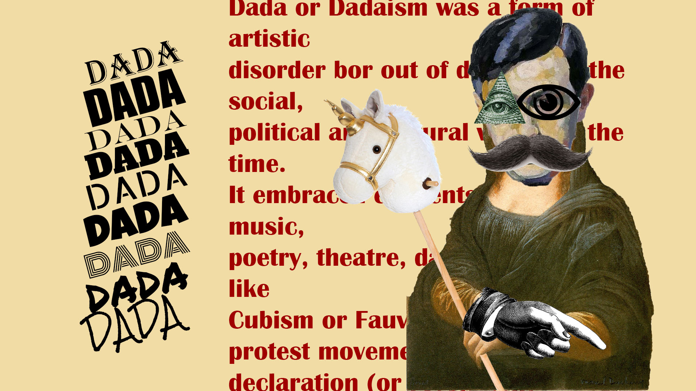

01.04.02 Stilartsite
Her fik vi stillet opgaven at vi skulle lave et stilartsite for en stilart. Den stilart som jeg havde fået tildelt var Dadaisme. I opgaven har jeg brugt HTML og CSS, hvor flexbox er en stor del af den måde som siden er sat op på.